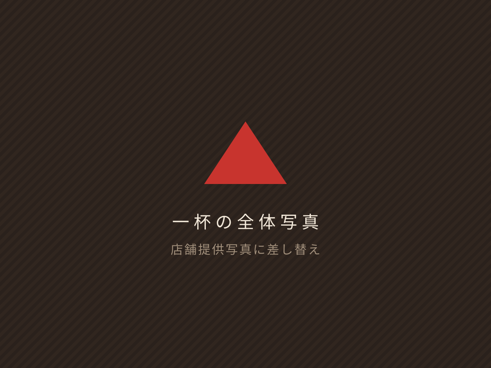
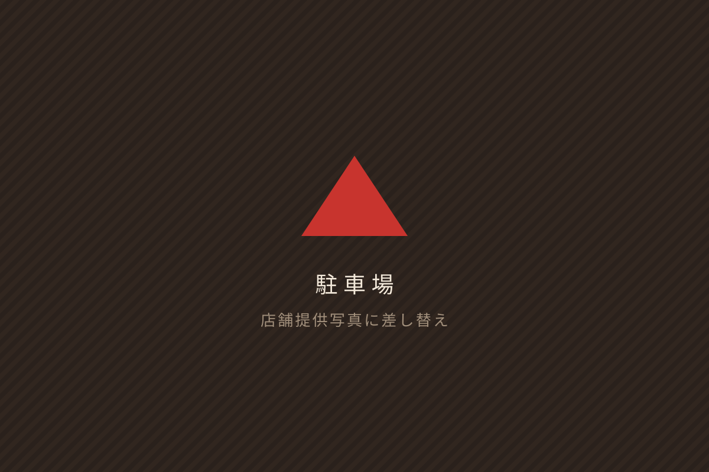

02 / THE RAMEN
The Ramen
火の山の一杯
豚骨×魚介
火の山の一杯は、豚骨と魚介の旨味を重ねたスープ。
店舗公式Instagramで公開されている内容にもとづいて掲載しています。
※スープ・麺・具材の詳細は、店舗確認後にこのセクションへ追記します。
実際に提供されている内容と異なる説明は掲載していません。

04 / FIRST VISIT
First Visit
はじめて火の山へ
初めてのお店は、着いてからの流れが分からないと少し不安です。来店までの手順をまとめました。
05 / INFORMATION
Information
店舗情報
- Shop店名
- 鹿児島ラーメン 火の山
- Address住所
-
〒899-5213
鹿児島県姶良市加治木町朝日町64 - Open営業時間
-
営業時間 要確認
公開情報に差異があるため、確定情報のみ掲載する方針です。店舗確認後に記載します。
- Closed定休日
定休日 要確認
- Parking駐車場
-
あり
※駐車台数・区画は確認中です。
- Tel電話番号
電話番号 要確認
- Opened開店日
2026年9月15日
- Instagram公式SNS
- @kagoshima.ramen.hinoyama（新しいタブで開きます）
06 / ACCESS
Access
火の山へ行く
車で来店される方向けに、場所と駐車場をまとめています。
〒899-5213
鹿児島県姶良市加治木町朝日町64
- 駐車場
- あり ／ 台数・区画は 要確認
- 来店手段
- 車でのご来店を想定しています。公共交通機関でのアクセスは 要確認

07 / INSTAGRAM
最新情報はInstagramで
当日の営業や新しいメニューは、Instagramの投稿がいちばん早い情報です。このサイトは基本情報をまとめる役割を担います。
Instagram営業のお知らせ／新メニュー／日々の写真
Webメニュー／営業時間／アクセス／駐車場
※デモでは投稿枠のみ表示しています。実制作時は最新投稿の掲載方法を店舗とご相談のうえ決定します。